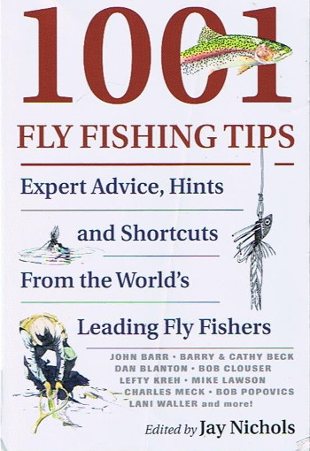
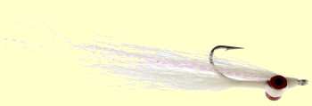

本棚から
1001 Fly Fishing Tips Jay Nichols 編 Head Water Books 刊
2017年の11月に、Amazonの洋書コーナーで、Fishing, Tips というキーワードで検索したら 1001 Fly Fishing Tips という本を見つけました。

内容紹介を読んで見るとなかなか面白そうだったし、何より古本の価格が安かったので（743円）すかさず購入した次第。
表紙には、「世界中のフライフィッシングのエキスパートからのアドバイス、ヒント、そしてショートカット」と書いてあり、裏表紙には、「さあ、あなたの釣り具を掴んで、25人以上の世界のフライフィッシングエキスパートと共にアメリカを釣り歩こう。」とあります。
寄稿者には、私でも知っている Lefty Kreh, Mike Lawson, Bob Clouser 等の名だたる釣り人が挙がっており、有益なティップスを惜しげも無く披露してくれています。対象魚としては鱒が中心ですが、ストライプドバス、スティールヘッド、スモールマウスバスなど、淡水・海水のフライフィッシングを幅広くカバーしています。
編集者は、アメリカの有名な「Fly Fisherman」という雑誌のマネージングエディターであった Jay Nichols 氏、そしてイラストレーターは、Dave Hall 氏です。
目次を紹介すると、
パート1 テクニックとプレゼンテーション
- キャスティング
- ウェーディング
- 魚の捜し方、見つけ方
- プレゼンテーション
- キャッチ＆リリース
パート2 フライフィッシングのための釣り具
- フライとフック
- リーダー、ティペット、及びノット
- フライラインとバッキング
- ロッド、リール、その他の用具
パート3 ハッチと季節
- ハッチ
- 季節
パート4 釣行、目的地、そして鱒以外の対象魚
- 釣行、目的地、そして鱒以外の対象魚
索引
となっています。
嬉しいことに、クライストチャーチ郊外のダーフィールド在住の Martin Langlands 氏からの、ニュージーランドでの釣りに関するアドバイスが「キウイ・レッスン」として2ページにわたって特集されていたり、 John Randolph 氏のニュージーランド釣行計画もやはり2ページにまとめられています。カモフラージュ・グリーン色のフライラインの重要性にも言及されており、なるほどなぁと納得しました。アメリカのフライフィッシャーマンたちにとっても、ニュージーランドでの釣りは大いなる憧れの対象なんだなと思いました。
私がたいへんお世話になったホキティカの元ガイド、ブリント・トロレイさんが、南島西海岸の降海型ブラウンに良く効くよと勧めてくれた

というソルトウォーター用ストリーマーの作者、Bob Clouser 氏によるスモールマウスバスについての記事もありました。
ニュージーランドの釣りに関して、各河川に拡大して大きな問題となったディディモのことは知っていたのですが、同じような侵略的生物である New Zealand Mudsnails についてはこの本で初めて知りました。ウェーディング用具の手入れの項で、生息域の拡大を防ぐために触れられていました。
2008年3月に出版されたこの本について、アメリカのAmazonのカスタマーレビューを見ても評価が高いものが多くありました。たくさんのティップスは事典のような形式でとても短くまとめられており、私の拙い読解力でも読むことが出来ました。わかりやすいイラストも、理解を助けてくれます。かゆいところに手が届く編集がなされており、初心者からベテランまで、一読の価値があると思われます。
ペーパーバックの新品はけっこういい値段がしますが、Kindle版 は 695円とお手頃なので、ぜひどうぞ。
本棚から 目次へ
サイトマップ
ホームへ
お問い合わせ